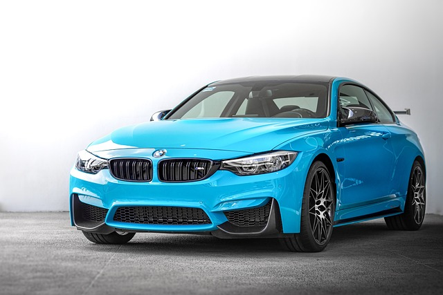
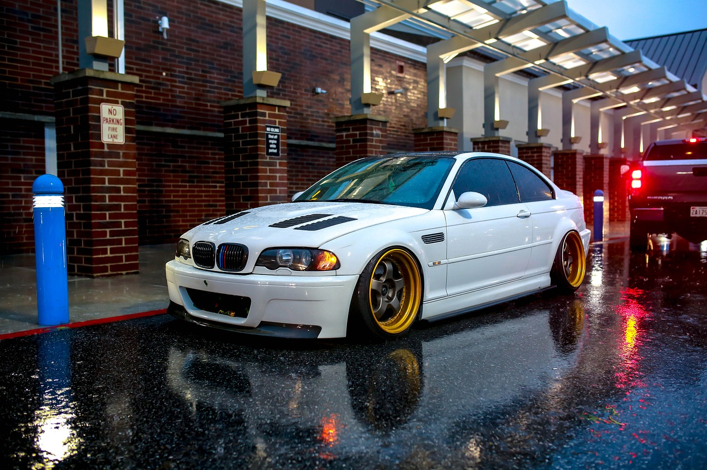
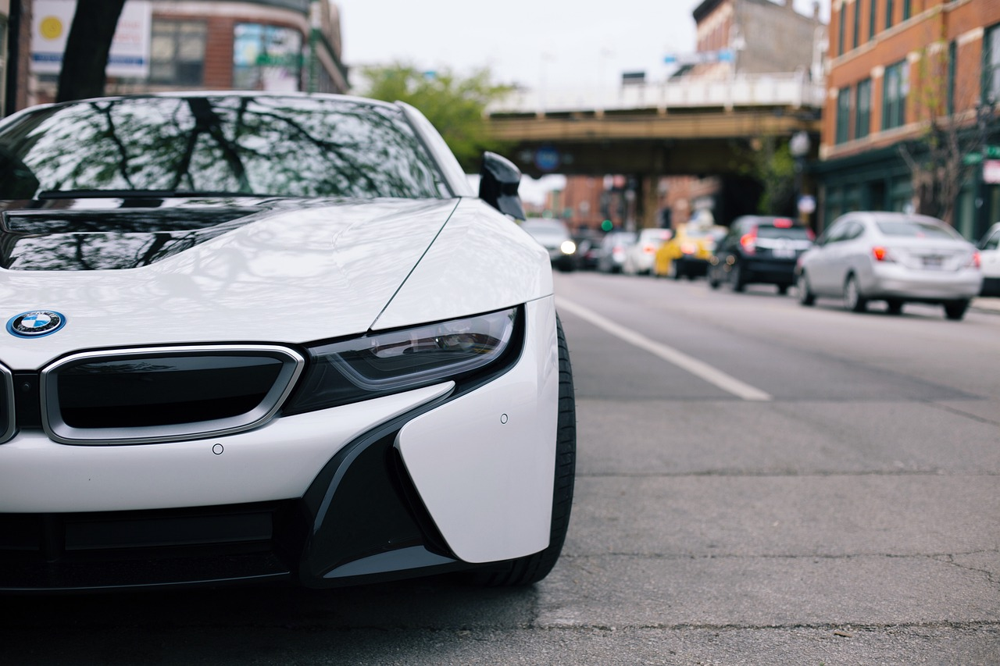

Allgemeine Infos
Gründung: 7. März 1916
Sitz: München, Deutschland
Mitarbeiterzahl: 154.950 (31. Dez. 2023)
Umsatz: 155 Milliarden Euro
Gründung: 7. März 1916
Sitz: München, Deutschland
Mitarbeiterzahl: 154.950 (31. Dez. 2023)
Umsatz: 155 Milliarden Euro
BMW steht für Qualität, Innovation und Fahrfreude. Die Marke hat sich über Jahrzehnten hinweg einen exzellenten Ruf erarbeitet, der weltweit bekannt ist. Mit ihrem Fokus auf Technologie und Design bietet BMW nicht nur Fahrzeuge, sondern ein unverwechselbares Fahrerlebnis.
Die präzise Verarbeitung und leistungsstarke Motoren machen BMW zu einer der bevorzugten Marken für Autoliebhaber. Besonders die BMW-Modelle kombinieren Sportlichkeit mit Komfort und bieten eine ausgezeichnete Fahrsicherheit.
Ein weiterer Grund, warum BMW so geschätzt wird, ist die ständige Weiterentwicklung. Die Marke setzt auf nachhaltige Mobilität und entwickelt innovative Elektro- und Hybridfahrzeuge, die sowohl umweltfreundlich als auch leistungsstark sind.
BMW bietet eine Vielzahl von Modellen an, die sich an verschiedene Bed
ürfnisse und Vorlieben anpassen. Von der kompakten BMW 1er bis zur
luxuriösen BMW 7er - BMW hat das richtige Modell für jeden.
Hier Einige Modelle:
M2
M3
M4
M5
M6
M8
i1
i3
i4
i7
iX
i8
iX M60


